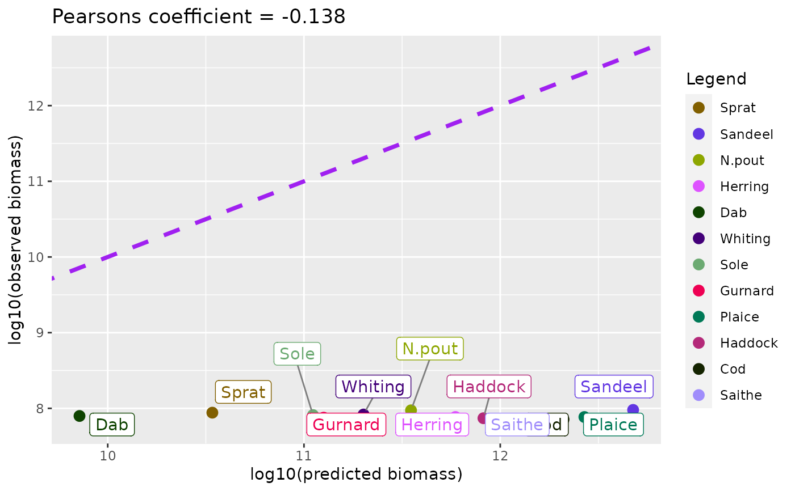
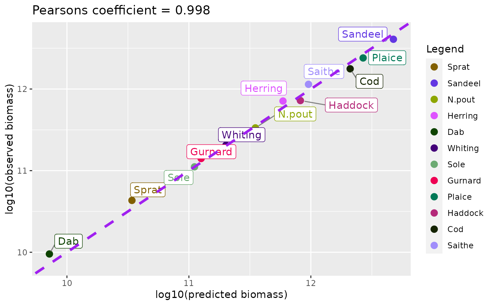
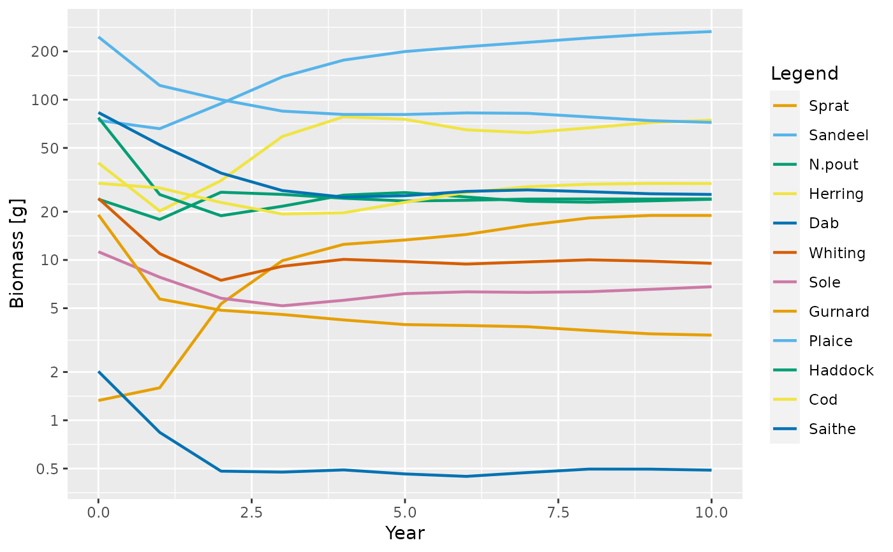
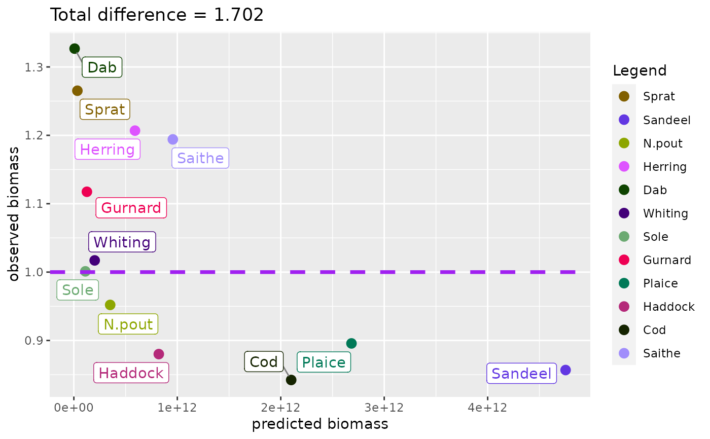
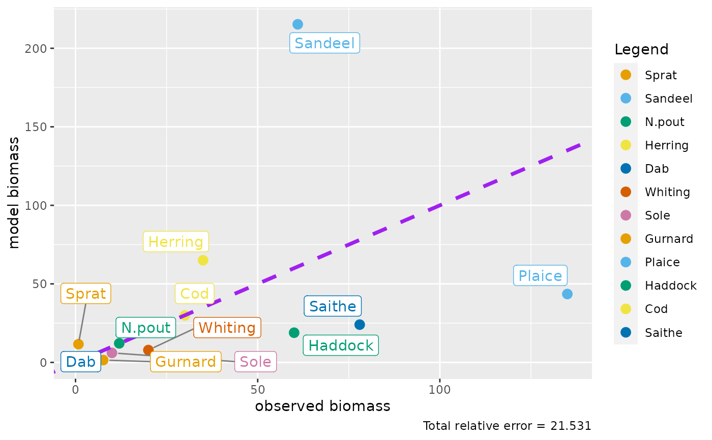

R/plotBiomassObservedVsModel.R
plotBiomassObservedVsModel.RdGiven a MizerParams object or MizerSIm object object for which biomass
observations are available for at least some species via
species_params(params)$biomass_observed, this function plots the total
biomass by species against the provided biomass observation values.
plotBiomassObservedVsModel( object, species = NULL, fraction = FALSE, log_scale = TRUE, return_data = FALSE, labels = TRUE )
| object | An object of class MizerParams or MizerSim. |
|---|---|
| species | The species to be affected. Optional. By default all observed biomasses will be matched. A vector of species names, or a numeric vector with the species indices, or a logical vector indicating for each species whether it is to be affected (TRUE) or not. |
| fraction | Whether to plot the Pearson correlation (FALSE) or the fraction of biomass (TRUE). Default is FALSE. |
| log_scale | If using the Pearson coefficient plot, whether to plot on the log10 scale (TRUE) or not (FALSE). Default is TRUE. |
| return_data | Whether to return the data frame for the plot (TRUE) or not (FALSE). Default is FALSE |
| labels | Whether to show text labels for each species (TRUE) or not (FALSE). Default is TRUE. |
A plot of the simulated biomass by species compared to observed biomass.
The dataframe which creates the plot. Default is FALSE.
For mizerParams objects, the initial biomass of species will be compared to the observed biomasses - unless the initial biomasses have been carefully calibrated we would not expect these to be close. For mizerSim objects, the final biomasses of the species will be compared to the observed biomasses.
Make sure that, for species which have no observed biomass,
biomass_observed for these species are set as 0 or NA.
Observed biomasses usually only include individuals above a certain size.
This size should either be specified in
species_params(params)$biomass_cutoff in grams, or else all sizes are
included.
ns_params <- newMultispeciesParams(NS_species_params_gears, inter) # the species parameters and interaction matrix#> #> #>ns_sim <- project(ns_params, t_max = 100, progress_bar = FALSE) end_biomass <- getBiomass(ns_sim)[nrow(ns_sim@n), ] # biomass at steady state vary_biomass <- end_biomass*(0.75+0.5*runif(nrow(ns_params@interaction))) # shift biomasses a bit # Check that works for the params object species_params(ns_params)$biomass_observed <- vary_biomass # read into ns_params object plotBiomassObservedVsModel(ns_params)# Check that works for the sim object species_params(ns_sim@params)$biomass_observed <- vary_biomass plotBiomassObservedVsModel(ns_sim)plotBiomassObservedVsModel(ns_sim, log_scale = F)plotBiomassObservedVsModel(ns_sim, fraction = T)test = plotBiomassObservedVsModel(ns_sim, fraction = T, return_data = T)